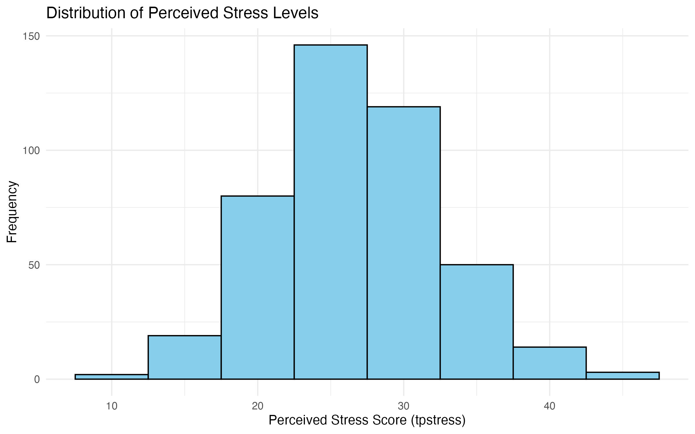
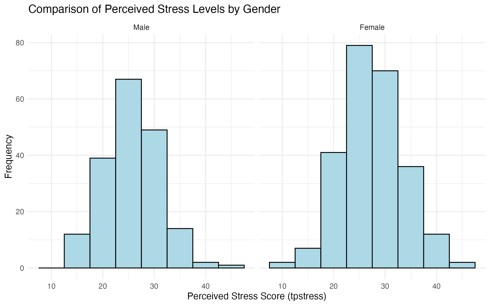
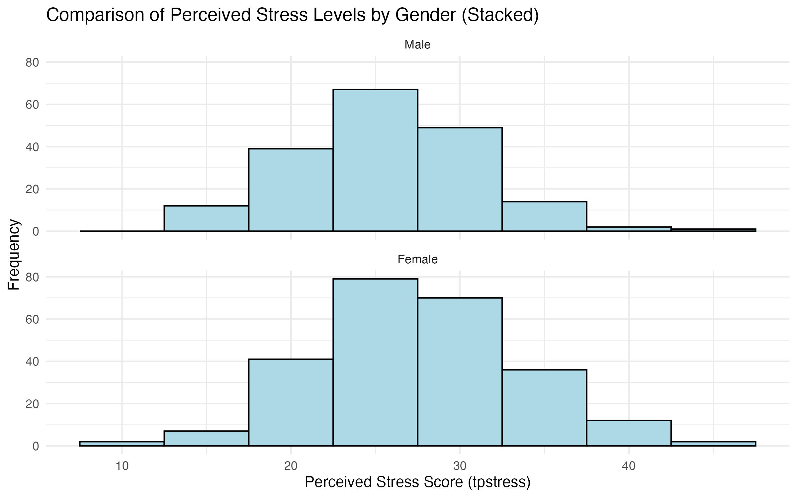
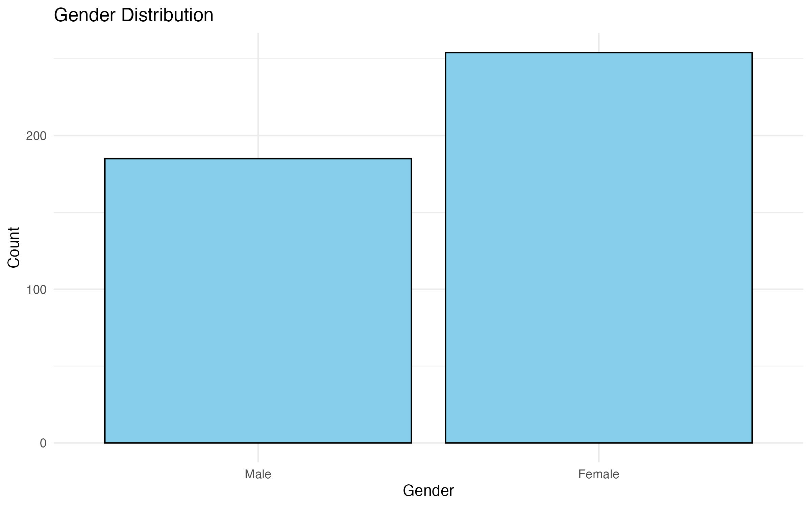
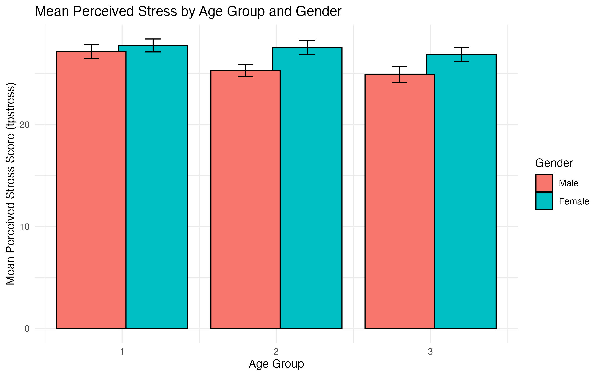
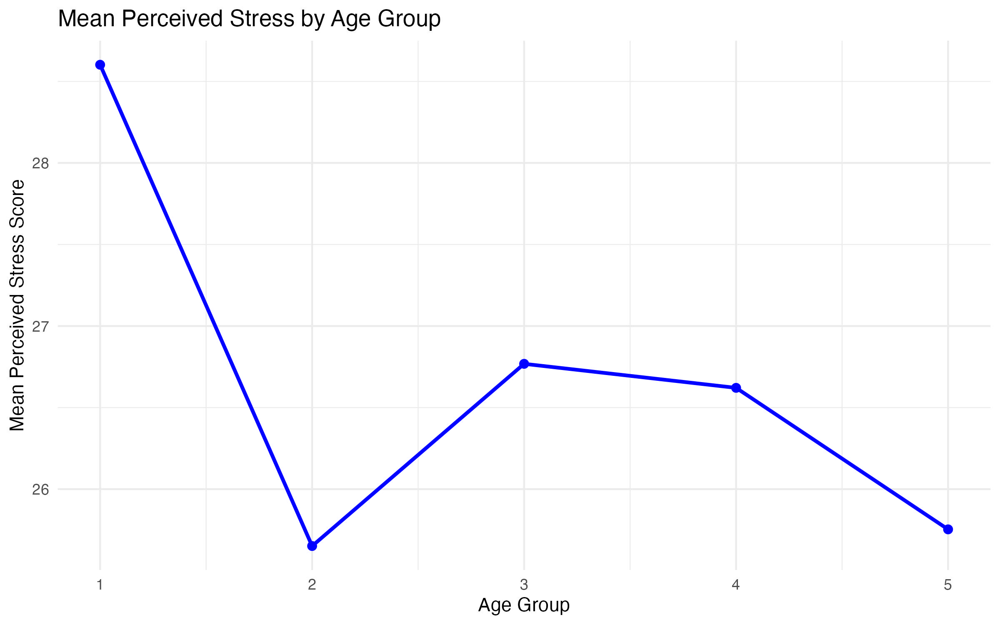
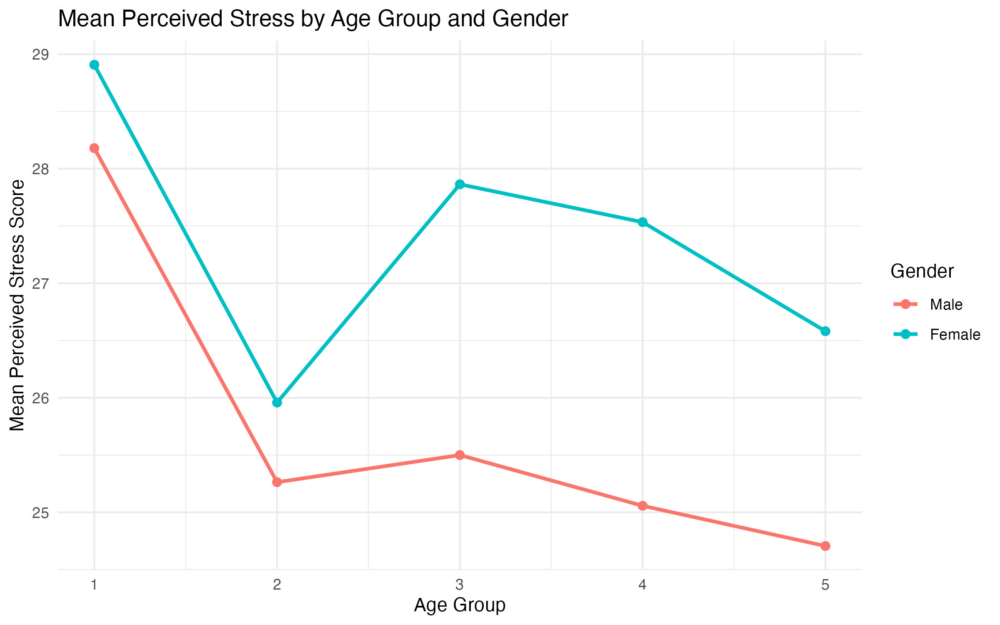
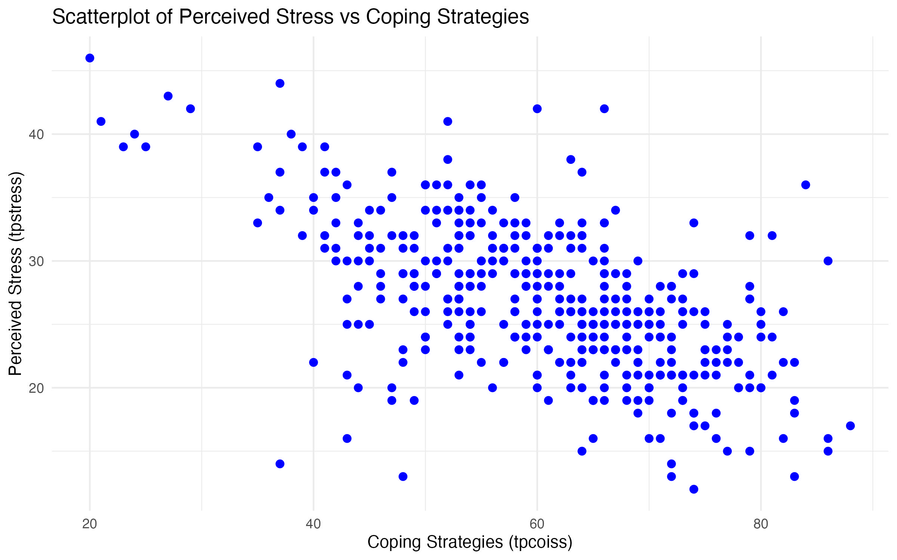
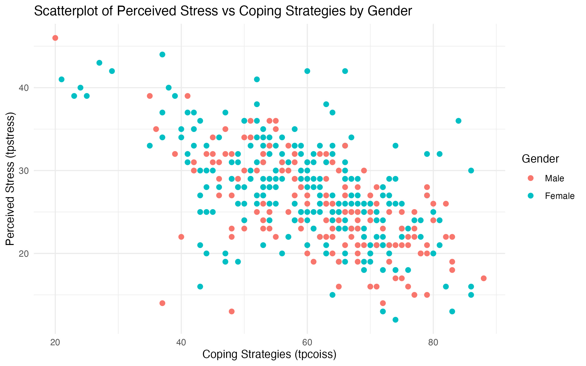
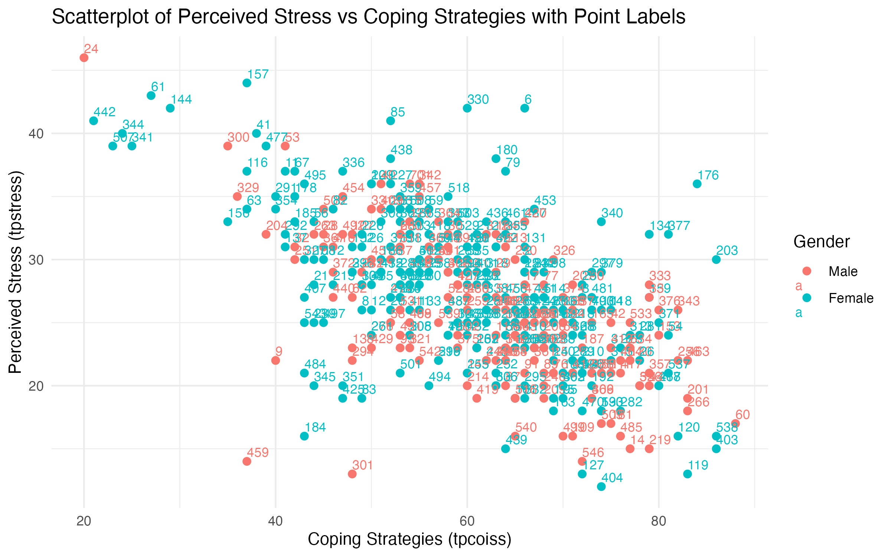

| Feature | CSV | RDS |
|---|---|---|
| Format | Plain text | Binary (R-specific) |
| Portability | Cross-platform and software-independent | R-specific |
| Metadata | Does not retain R-specific attributes | Retains all R-specific attributes |
| Complex objects | Supports tabular data only | Supports any R object |
| Human-readable | Yes | No |
| Efficiency | Slower for large datasets | Faster and more compact |
| Use case | Sharing data with non-R users or if the data will be processed in other tools like Excel or Python | Storing and reloading your data with all its R-specific features, particularly suitable for storing large datasets or complex objects that need to be efficiently loaded |
MGT4018/MGT4090 Lab 1
1 Introduction
This lab is the same as the SPSS Lab 1 for MGT4018 and MGT4090. We use base R functions as the default. While there are many R packages available, understanding base R operations provides a strong foundation for data analysis.
Alternatives using R packages
Alternatives for achieving the same outcomes using different R packages are provided in green boxes. If you want to explore these alternatives, each box will introduce the respective package, how to install and use it, and the outputs it can produce.
2 Exercise A: Creating and Exploring a Dataset in R
This lab will guide you through creating a dataset, assigning labels, and conducting basic analyses using R. You will learn how to create variables, enter data, and generate summary tables similar to those you would in SPSS.
2.1 Step A1: Setup
Before starting any work in R, it is important to organize your files. This ensures that your scripts, datasets, and outputs are easy to manage and reproducible. Projects are strongly recommended for better organization and reproducibility, but setting a working directory is an alternative if needed (see also the respective section in 0. Getting Started).
Note
You can either work through the following steps and copy/paste the respective code into the Lab_Exercise_A.R file that you will create in Step 1 or download the R script for Exercise A and follow the instructions below and save the downloaded file in the scripts folder that you will create.
2.1.1 Option 1: Create a Project
The best way to organize your work is to create an RStudio project. This keeps all related files in a single folder. Follow these steps:
- Open RStudio.
- Go to File > New Project.
- Select New Directory and then New Project.
- Choose a location on your computer and give the project a name, e.g.,
ResearchMethodsLab. Avoid spaces in folder and file names. - Click Create Project. RStudio will open a new session within the project folder.
- It is good practice to not have you files in this main folder, but create a set of subfolders similar to the following. Navigate to your project folder and create the following subfolders:
ResearchMethodsLab/
├── data/
├── scripts/
├── output/
│ ├── figures/
│ └── tables/
├── docs/
└── ResearchMethodsLab.Rproj- Create a new R script: Go to File > New File > R Script.
- Save the script in your
scriptsfolder with an appropriate name, e.g.,Lab1_Exercise_A.R.
Now you are ready to begin your work in R and continue with Step A2!
2.1.2 Option 2: Set Working Directory Manually
If you are not using a project, you will need to set a working directory manually. The working directory is the folder where R looks for files and saves outputs.
- In your Finder (Mac) or Explorer (Windows), create a new folder for the R Labs (e.g.,
ResearchMethodsLab) as well as the subfolder structure below. Avoid spaces in folder and file names.
ResearchMethodsLab/
├── data/
├── scripts/
├── output/
│ ├── figures/
│ └── tables/
└── docs/- Open RStudio.
- Create a new R script: Go to File > New File > R Script.
- Save the script in the
scriptsfolder that you previously created with an appropriate name, e.g.,Lab_Exercise_A.R. - Set the working directory in your script using the
setwd()function. Copy the following code into your script, change the path to the older that you created, and execute the script.
setwd("path/to/your/folder")You can check whether the working directory is set to the folder that you want to by using the following code:
# Display the current working directory
getwd()Now you are ready to begin your work in R and continue with Step A2!
2.2 Step A2: Creating or Loading the Dataset
For practice purposes, try both options so you familiarise yourself with creating and loading datasets in R.
2.2.1 Option 1: Create your Dataset
In base R, we will create our vectors and combine them into a data frame. Use the following code to create your variables:
# Create vectors for our data
id <- 1:30
# Create age bands with labels
age_bands <- factor(
c(1,3,2,4,2,5,5,2,3,1,4,1,3,2,4,2,5,5,2,3,1,4,2,4,2,5,5,2,3,1),
levels = 1:5,
labels = c("<21", "21-30", "31-40", "41-50", ">50")
)
# Create gender categories with labels
gender <- factor(
c(0,1,1,0,0,0,1,1,1,0,9,0,2,1,0,0,1,1,0,0,1,0,0,0,1,1,1,0,9,9),
levels = c(0,1,2,9),
labels = c("Male", "Female", "Other", "Prefer not to say")
)
Note
In R, we use factor() to create categorical variables. This is similar to value labels in SPSS. The levels argument specifies the underlying codes, while labels provides the human-readable labels.
We now combine the variables that we created in the previous step into a data.frame.
# Combine into a data frame
survey_data <- data.frame(
ID = id,
AgeBand = age_bands,
Gender = gender
)You can easily explore and check the basic structure of your data and get a summary:
# View the first few rows using head()
head(survey_data)
# Examine the structure
str(survey_data)
# Get basic summary statistics
summary(survey_data)When working with data in R, saving and reloading data efficiently is crucial for reproducibility and sharing. Two common file formats for saving data in R are .csv files and .rds files. While both serve the purpose of persisting data for future use, they have distinct differences in terms of structure, use cases, and functionality.
You can use the following code to save your dataset in either format. In line with the best practice around folder structures, the code below works only if you created the data folder within your project folder or working directory. For this tutorial, save your output as a .csv file (without row names).
# Save as R data file
saveRDS(survey_data, "data/survey_data_export.rds")
# Save as .csv
write.csv(survey_data, "data/survey_data_export_rows.csv")
# By default, the data is exported with row names. Now to export data without row names we simply have to pass row.names=FALSE as an argument in the write.csv() function.
write.csv(survey_data, "data/survey_data_export.csv", row.names=FALSE)A .csv file (comma-separated values) is a plain text format commonly used for storing tabular data. Each row in the file corresponds to a row in the dataset, and columns are separated by commas. In general, .csv files are platform-independent, widely supported by software like Excel, and easily shared or imported into other programming environments.
An .rds file is a native R binary format used to store a single R object. Unlike .csv, .rds files preserve all attributes and data types, including factors, column classes, and even more complex structures like lists, models, or custom objects. The table below outlines the main differences between saving a data frame in each format.
2.2.2 Option 2: Load your Dataset
As an alternative to creating your own dataset, you can download the dataset. Copy this file into your data folder and then run the following code:
# Load the CSV file stored in the "data" folder
survey_data <- read.csv("data/lab1-exercise-a.csv")You can easily explore and check the basic structure of your data and get a summary:
# View the first few rows using head()
head(survey_data)
# Examine the structure
str(survey_data)
# Get basic summary statistics
summary(survey_data)The imported dataset contain only the numerical values. We will use factor() again transform this into categorical variables with levels specifying the underlying codes and labels providing the human-readable labels.
# Assign labels for "AgeBand"
survey_data$AgeBand <- factor(
survey_data$AgeBand,
levels = c(1, 2, 3, 4, 5),
labels = c("<21", "21-30", "31-40", "41-50", ">50")
)
# Assign labels for "Gender"
survey_data$Gender <- factor(
survey_data$Gender,
levels = c(0,1,2,9),
labels = c("Male", "Female", "Other", "Prefer not to say")
)2.3 Step A3: Modifying your Dataset
Note
This step is not needed, the dataset that you created with the code (Step A2, option 1) or downloaded (Step A2, option 2) are already correct, but have a look and get an overview of what you can do with R.
We create a copy of the data frame that we use for the remainder of the lab. Please run the following code before experimenting with possible modifications:
survey_data_copy <- survey_dataData frames are among the most commonly used data structures in R, especially for storing and analyzing tabular data. Once a data frame is loaded or created, it is often necessary to modify it to suit specific analytical needs. Common modifications include editing specific values, adding or removing columns and rows, and renaming variables. These operations can be performed efficiently using base R, without the need for additional packages. Understanding these basic techniques is essential for working effectively with data in R.
2.3.1 Editing Specific Values
You can directly access and modify specific elements of a data frame using indexing with square brackets [ , ]. The format is data[row, column], where you specify the row and column to edit. You can also use column names for clarity.
# Edit the Gender of the participant with ID 15
survey_data_copy[survey_data_copy$ID == 15, "Gender"] <- "Female"
print(survey_data_copy[survey_data_copy$ID == 15, ])Here, the gender for the participant with ID 15 is updated to “Female.”
2.3.2 Adding a Column
To add a new column to a data frame, use the $ operator or specify the new column name within square brackets.
# Add a new column indicating if the participant is above 30 based on AgeBand
survey_data_copy$Above30 <- survey_data_copy$AgeBand %in% c("31-40", "41-50", ">50")
print(head(survey_data_copy))This new column indicates whether each participant belongs to an age group over 30.
2.3.3 Adding a Row
To append a new row, use the rbind() function, which binds rows together.
# Add a new participant to the data frame
new_row <- data.frame(ID = 31, AgeBand = "<21", Gender = "Other", Above30 = FALSE)
survey_data_copy <- rbind(survey_data_copy, new_row)
print(tail(survey_data_copy))2.3.4 Removing a Column
You can remove a column by setting it to NULL or by subsetting the data frame without that column.
# Remove the "Above30" column
survey_data_copy$Above30 <- NULL
print(head(survey_data_copy))2.3.5 Removing a Row
To remove a row, subset the data frame, excluding the unwanted row.
# Remove the row where ID is 10
survey_data_copy <- survey_data_copy[survey_data_copy$ID != 10, ]
print(head(survey_data_copy))2.3.6 Renaming Columns
Renaming columns can be done by directly modifying the names() of the data frame.
# Rename columns
names(survey_data_copy) <- c("ParticipantID", "AgeGroup", "GenderIdentity")
print(head(survey_data_copy))2.3.7 Combining Data Frames
You can merge two data frames using merge() to combine them based on a common column.
# Create another data frame with additional information
additional_data <- data.frame(
ParticipantID = c(1, 2, 3, 4, 5),
CompletedSurvey = c(TRUE, TRUE, FALSE, TRUE, FALSE)
)
# Merge data frames by the "ParticipantID" column
survey_data_copy <- merge(survey_data_copy, additional_data, by = "ParticipantID", all.x = TRUE)
print(head(survey_data_copy))2.3.8 Summary
These are some of the most common operations for modifying data frames in base R. Mastering these techniques will allow you to efficiently manipulate data frames and tailor them to your analytical needs:
- Edit specific values: Modify elements using
data[row, column]. - Add a column: Use
$or square brackets. - Add a row: Use
rbind(). - Remove a column: Set it to
NULLor subset the data frame. - Remove a row: Subset the data frame excluding the row.
- Rename columns: Modify
names()directly. - Combine data frames: Use
merge().
2.4 Step A4: Frequency Tables (Summary Statistics)
Frequency tables are a fundamental tool in data analysis for summarizing and understanding the distribution of categorical variables. They show how often each category appears in a dataset, helping analysts quickly grasp patterns and trends. In business research, frequency tables are commonly used to analyze survey results, customer demographics, or product categories. In R, base functions like table() and prop.table() provide a straightforward way to create and analyze frequency tables.
This guide introduces frequency tables using the survey_data data frame and demonstrates their creation and interpretation.
2.4.1 When and Why to Use Frequency Tables
Frequency tables are particularly useful when:
- You need to summarize categorical data (e.g., age groups, gender, product categories).
- You want to identify dominant categories or patterns in responses.
- You need a quick check for data quality (e.g., missing values or unexpected categories).
- You are preparing data for visualization or further statistical analysis.
By condensing raw data into an easy-to-read format, frequency tables simplify decision-making and analysis.
2.4.2 Creating a Basic Frequency Table
The table() function in R generates frequency counts for one or more variables. For example, to count the number of participants in each age bandn and for each gender:
# Frequency table for AgeBand
age_band_freq <- table(survey_data$AgeBand)
# Frequency table for Gender
gender_freq <- table(survey_data$Gender)
# Display the results
print("Frequency table for AgeBand:")
print(age_band_freq)
print("Frequency table for Gender:")
print(gender_freq)This table displays the count of participants in each age group.
2.4.3 Adding Proportions
Proportions show the relative frequency of each category as a percentage of the total. Use the prop.table() function to calculate proportions from a frequency table:
# Proportions for AgeBand
age_band_prop <- prop.table(age_band_freq)
print(age_band_prop)The output shows the proportion of participants in each age group. To display percentages, multiply by 100:
# Proportions as percentages
age_band_percent <- round(prop.table(age_band_freq) * 100, 2)
print(age_band_percent)This provides a clear picture of the distribution of age groups as percentages. You can also combine the basic frequency table with the proportions and print the combined results:
# Frequency table for AgeBand
age_band_freq <- table(survey_data$AgeBand)
# Proportions as percentages for AgeBand
age_band_percent <- round(prop.table(age_band_freq) * 100, 2)
# Combine frequencies and percentages
age_summary <- cbind(
Frequency = age_band_freq,
Percentage = age_band_percent
)
# Display the results
print("AgeBand Distribution:")
print(age_summary)2.4.4 Summary Statistics for Frequency Tables
Once you have created a frequency table, you might want to extract specific insights:
- Mode: The category with the highest frequency.
- Rare categories: Categories with very low frequencies.
# Find the most frequent AgeBand
most_frequent_age_band <- names(age_band_freq[which.max(age_band_freq)])
print(paste("Most frequent age band:", most_frequent_age_band))
# Identify rare categories (frequency <= 2)
rare_categories <- names(age_band_freq[age_band_freq <= 2])
print(paste("Rare categories:", paste(rare_categories, collapse = ", ")))2.4.5 Handling Missing or Unexpected Values
Frequency tables are also useful for spotting missing or unexpected values. For instance:
# Check for missing or unusual values in Gender
gender_freq <- table(survey_data$Gender, useNA = "ifany")
print(gender_freq)The useNA argument ensures that missing values (if any) are included in the table.
2.5 Step A5: Cross-Tabulation
Cross-tabulations, also known as contingency tables, are a powerful tool in data analysis for examining the relationship between two or more categorical variables. They provide a matrix of frequency counts that show how categories of one variable are distributed across categories of another. Cross-tabulations are widely used in business analytics, such as comparing demographics (e.g., age and gender) or tracking customer behavior across segments.
This guide delves deeper into cross-tabulations using the survey_data data frame, illustrating how to create, interpret, and enhance these tables with additional insights.
2.5.1 When and Why to Use Cross Tabulations
Cross-tabulations are particularly useful when:
- You want to compare distributions of one variable across levels of another.
- You need to detect patterns or relationships between categorical variables.
- You aim to summarize multivariate data for clear communication and decision-making.
- You are preparing data for visualization (e.g., stacked bar charts or heatmaps).
For example, in a survey analysis, you might want to compare how age groups are distributed by gender.
2.5.2 Creating a Cross Tabulation
In R, the table() function is used to create cross-tabulations. For example, to examine the distribution of participants by AgeBand and Gender:
# Create a cross-tabulation of AgeBand and Gender
age_gender_table <- table(survey_data$AgeBand, survey_data$Gender)
print(age_gender_table)The resulting table displays the frequency counts for each combination of AgeBand and Gender. For instance:
- The value at the intersection of
<21andMalerepresents the number of participants who are under 21 and identify as male. - The totals for each row or column provide marginal counts (see Marginal Totals below).
2.5.3 Adding Proportions to Cross Tabulations
Frequency counts can be converted to proportions to better understand relative distributions. The prop.table() function is used for this purpose.
Proportions for the Entire Table
# Proportions for the entire table
age_gender_prop <- prop.table(age_gender_table)
print(round(age_gender_prop * 100, 2))Here, each value represents the percentage of the total participants in that specific category combination.
Row-Wise Proportions
To see proportions within each row (e.g., the percentage of each gender within an age band):
# Row-wise proportions
row_prop <- prop.table(age_gender_table, margin = 1)
print(round(row_prop * 100, 2))This output helps answer questions like, “What percentage of individuals in the 31-40 age group identify as Female?”
Column-Wise Proportions
To see proportions within each column (e.g., the percentage of each age band within a gender):
# Column-wise proportions
col_prop <- prop.table(age_gender_table, margin = 2)
print(round(col_prop * 100, 2))This output helps answer questions like, “What percentage of individuals identifying as Male are in the 41-50 age band?”
2.5.4 Marginal Totals
Adding row and column totals to a cross-tabulation provides a comprehensive overview of the data. Use the addmargins() function to include these totals:
# Add row and column totals to the table
age_gender_with_totals <- addmargins(age_gender_table)
print(age_gender_with_totals)The row totals show the distribution of participants across age bands, while the column totals display the distribution across gender categories.
2.5.5 Customizing Cross Tabulation Output
For clearer interpretation, you can customize the table’s appearance using descriptive labels for rows and columns. Use dimnames() to update labels:
# Customize row and column names
dimnames(age_gender_table) <- list(
AgeGroup = levels(survey_data$AgeBand),
GenderCategory = levels(survey_data$Gender)
)
print(age_gender_table)2.5.6 Detecting Relationships in Cross Tabulations
Cross-tabulations provide a foundation for detecting relationships between variables. While frequency counts and proportions are descriptive, statistical tests such as the Chi-Square Test can quantify the association between variables.
# Perform a Chi-Square Test of Independence
chi_test <- chisq.test(age_gender_table)
print(chi_test)The test evaluates whether there is a significant association between AgeBand and Gender. A p-value less than 0.05 suggests that the relationship is statistically significant.
Note: R might show a warning Chi-squared approximation may be incorrect, which indicates that the conditions for the Chi-Square test’s validity may not be fully met. Specifically, the test assumes that expected frequencies in each cell of the contingency table are sufficiently large. Typically, the rule of thumb is that each expected cell frequency should be at least 5. You can check the expected frequencies by using the expected attribute of the test result:
# View the expected frequencies
chi_test$expected2.5.7 Summary
Cross-tabulations are a versatile tool for analyzing the relationship between categorical variables. Mastering cross-tabulations equips you with the ability to summarize and interpret categorical data effectively, a crucial skill in business research and data analysis. In R, you can:
- Use
table()to create cross-tabulations. - Add proportions with
prop.table()for a deeper understanding of relative distributions. - Include totals with
addmargins()for a complete summary. - Customize, export, or extend your analysis with statistical tests.
2.6 Step A6: Saving Frequency Tables and Cross-Tabulations
When analyzing data, frequency tables and cross-tabulations provide valuable insights into categorical variables and their relationships. To share or store these tables for reporting or further analysis, you can save them as CSV files or directly export them in a human-readable format. This guide demonstrates both methods, using survey_data for examples.
2.6.1 Saving Frequency Tables
Frequency tables summarize the distribution of a single categorical variable, and you can save them as a CSV file or export them as plain text.
Saving as a CSV File
To save a frequency table as a CSV file, first convert it into a data frame using as.data.frame():
# Create a frequency table for AgeBand
age_band_freq <- table(survey_data$AgeBand)
# Convert the frequency table to a data frame
age_band_df <- as.data.frame(age_band_freq)
# Save the data frame to a CSV file
write.csv(age_band_df, "output/tables/age_band_frequency.csv", row.names = FALSE)This saves the frequency table as a CSV file named age_band_frequency.csv. Each row in the CSV represents a category and its corresponding frequency.
Exporting to Plain Text
For a more human-readable format, you can save the table directly as plain text using capture.output():
# Export the frequency table to a text file
capture.output(age_band_freq, file = "output/tables/age_band_frequency.txt")The output file, age_band_frequency.txt, contains the frequency table as it appears in the R console.
2.6.2 Saving Cross-Tabulations
Cross-tabulations summarize relationships between two categorical variables. Saving them involves similar steps to frequency tables, with additional considerations for row and column labels.
Saving as a CSV File
Like frequency tables, cross-tabulations can be converted into a data frame for CSV export:
# Create a cross-tabulation of AgeBand and Gender
age_gender_table <- table(survey_data$AgeBand, survey_data$Gender)
# Convert the cross-tabulation to a data frame
age_gender_df <- as.data.frame(age_gender_table)
# Save the cross-tabulation to a CSV file
write.csv(age_gender_df, "output/tables/age_gender_cross_tabulation.csv", row.names = FALSE)This saves the cross-tabulation as a CSV file named age_gender_cross_tabulation.csv. Each row in the CSV represents a unique combination of AgeBand and Gender, along with its frequency.
Exporting to Plain Text
To save a formatted version of the cross-tabulation, use capture.output():
# Export the cross-tabulation to a text file
capture.output(age_gender_table, file = "output/tables/age_gender_cross_tabulation.txt")The file age_gender_cross_tabulation.txt will display the table as it appears in the R console, retaining its tabular structure.
Adding Totals Before Export
Adding marginal totals to cross-tabulations can make them more informative before saving:
# Add row and column totals
age_gender_with_totals <- addmargins(age_gender_table)
# Save the table with totals as plain text
capture.output(age_gender_with_totals, file = "output/tables/age_gender_with_totals.txt")This ensures that row and column totals are included in the exported table for comprehensive analysis.
2.6.3 Saving Proportions
Proportions provide additional insights and can be saved in the same way as frequency counts. For example:
# Calculate proportions for AgeBand
age_band_prop <- prop.table(age_band_freq)
# Convert to a data frame and save as CSV
age_band_prop_df <- as.data.frame(age_band_prop)
write.csv(age_band_prop_df, "output/tables/age_band_proportions.csv", row.names = FALSE)Similarly, cross-tabulation proportions can be saved:
# Calculate proportions for the cross-tabulation
age_gender_prop <- prop.table(age_gender_table)
# Convert to a data frame and save as CSV
age_gender_prop_df <- as.data.frame(age_gender_prop)
write.csv(age_gender_prop_df, "output/tables/age_gender_proportions.csv", row.names = FALSE)2.6.4 Summary
To save frequency tables and cross-tabulations for reporting or analysis:
- As CSV files: Use
as.data.frame()andwrite.csv()to export structured data. - As plain text: Use
capture.output()for human-readable formats. - With proportions: Save proportions using similar methods to enhance insights.
- With totals: Add marginal totals before exporting for a complete overview.
These techniques ensure your tables are accessible for external use, whether for sharing with colleagues, integrating into reports, or storing for reproducibility.
Beautiful, customizable tables with export options with
gt
The gt package is a powerful tool for creating beautiful, publication-quality tables directly in R. It provides an intuitive and flexible workflow for generating summary tables, including frequency tables and cross-tabulations, with advanced formatting options for customization. The gt package is particularly well-suited for reports, presentations, and dashboards.
Creating and Saving Cross-Tabulation
# Install package
install.packages("gt")
install.packages("dplyr")
# Load janitor package
library(gt)
library(dplyr)
# Create a cross-tabulation
age_gender_table <- table(survey_data$AgeBand, survey_data$Gender)
# Convert the table to a data frame
age_gender_df <- as.data.frame(age_gender_table)
# Create a gt table
gt_table <- gt(data = age_gender_df) %>%
tab_header(
title = "Cross-Tabulation of Age Band and Gender",
subtitle = "Frequency Distribution"
) %>%
cols_label(
Var1 = "Age Band",
Var2 = "Gender",
Freq = "Count"
) %>%
fmt_number(
columns = c(Freq),
decimals = 0
) %>%
tab_source_note(
source_note = "Data Source: Survey Data"
)
# Save the table as an HTML file
gtsave(gt_table, filename = "output/tables/age_gender_cross_tabulation.html")Advantages:
- Generating publication-ready tables with advanced customization.
- Producing interactive HTML tables for dashboards or web-based reports.
Cleaning and Tabulating Data with
janitor
The janitor package offers functions like tabyl() for creating frequency tables and cross-tabulations, with options to directly save them as data frames for further analysis or export.
Creating and Saving Frequency Tables
# Install package
install.packages("janitor")
install.packages("dplyr")
# Load janitor package
library(janitor)
library(dplyr)
# Frequency table for AgeBand
age_band_freq <- survey_data %>%
tabyl(AgeBand)
# Save as CSV
write.csv(age_band_freq, "output/tables/age_band_frequency.csv", row.names = FALSE)Creating and Saving Cross-Tabulation
# Make sure that the package is installed and loaded
# Cross-tabulation of AgeBand and Gender
age_gender_table <- survey_data %>%
tabyl(AgeBand, Gender)
# Save as CSV
write.csv(age_gender_table, "output/tables/age_gender_cross_tabulation.csv", row.names = FALSE)Advantages:
- Automatically includes proportions and percentages in the output.
- Provides a clean and readable tabular output.
Publication-Ready Tables with
gtsummary
The gtsummary package is great for creating cross-tabulations with enhanced formatting and export options.
Creating and Saving Cross-Tabulation
# Install package
install.packages("gtsummary")
install.packages("dplyr")
# Load package
library(gtsummary)
library(dplyr)
# Create a cross-tabulation table
age_gender_table <- survey_data %>%
tbl_cross(
row = AgeBand,
col = Gender
)
# Save as a CSV or Word document
as_gt(age_gender_table) %>%
gt::gtsave("output/tables/age_gender_cross_tabulation.html")Advantages:
- Produces beautifully formatted tables.
- Supports export to multiple formats (e.g., HTML, Word, PDF).
Customizable Table Formatting with
flextable
The flextable package is ideal for customizing tables for reports and presentations such as Word/PowerPoint outputs.
Formatting and Saving a Cross-Tabulation
# Install package
install.packages("flextable")
install.packages("dplyr")
# Load package
library(flextable)
library(dplyr)
# Convert a cross-tabulation to a flextable
age_gender_table <- table(survey_data$AgeBand, survey_data$Gender) %>%
as.data.frame()
ft <- flextable(age_gender_table)
# Save as Word document
save_as_docx(ft, path = "output/tables/age_gender_cross_tabulation.docx")
# Save as PowerPoint document
save_as_pptx(ft, path = "output/tables/age_gender_cross_tabulation.pptx")
# Save as image
save_as_image(ft, path = "output/tables/age_gender_cross_tabulation.png")Advantages:
- Highly customizable appearance.
- Export to Word, PowerPoint, or HTML formats.
3 Exercise B: Reports and Tables
This exercise focuses on how to produce reports and tables from R using a larger data set.
3.1 Step B1: Setup
You can continue working with the same project or working directory (depending on which option you chose in Step A1). To get started with this exercise, please do the following:
- Please download the dataset and save it in the
datafolder within your project folder or working directory. - Create a new R script: Go to File > New File > R Script.
- Save the script in the
scriptsfolder within your project folder or working directory with an appropriate name, e.g.,Lab1_Exercise_B_C.R. (Note: For simplicity, we combine Exercises B and C into one script as they are based on the same data, but you can also create separate scripts for each exercise.)
Note
You can either work through the following steps and copy/paste the respective code into the Lab_Exercise_B_C.R file that you created or download the R script for Exercises B and C, save the downloaded file in the scripts folder, and run the respective code snippets according to the instructions below.
3.2 Step B2: Loading the Data
Copy the code below into the Lab_Exercise_B.R script and run it:
# Load the CSV file stored in the "data" folder
survey_data_full <- read.csv("data/lab1-survey.csv")You can easily explore and check the basic structure of your data and get a summary:
# View the first few rows using head()
head(survey_data_full)
# Examine the structure
str(survey_data_full)
# Get basic summary statistics
summary(survey_data_full)Before moving on to the analysis, we want to take a look at demographic variables. Demographic variables are fundamental in empirical research as they capture key characteristics of individuals or populations, such as age, gender, marital status, education level, and socioeconomic background. These variables provide essential context for understanding behaviors, preferences, and outcomes, allowing researchers to analyze patterns, identify trends, and draw meaningful comparisons across groups. In business and social science research, demographic variables are often used to segment data, control for confounding factors, and explore relationships between characteristics and dependent variables. Their inclusion ensures a more comprehensive and nuanced understanding of research findings, enabling the development of targeted strategies and policies.
We want to assign labels to the demographic variables in the survey_data_full data frame using factors with labeled levels. This method ensures the data remains categorical but with human-readable labels for easier interpretation and analysis.
# Convert demographic variables to factors with labeled levels
# Assign labels for "sex"
survey_data_full$sex <- factor(
survey_data_full$sex,
levels = c(1, 2),
labels = c("Male", "Female")
)
# Assign labels for "marital"
survey_data_full$marital <- factor(
survey_data_full$marital,
levels = c(1, 2, 3, 4, 5, 6, 7, 8),
labels = c(
"Single", "Steady relationship", "Living with partner",
"Married first time", "Remarried", "Separated",
"Divorced", "Widowed"
)
)
# Assign labels for "child"
survey_data_full$child <- factor(
survey_data_full$child,
levels = c(1, 2),
labels = c("Yes", "No")
)
# Assign labels for "educ"
survey_data_full$educ <- factor(
survey_data_full$educ,
levels = c(1, 2, 3, 4, 5, 6),
labels = c(
"Primary", "Some secondary", "Completed high school",
"Some additional training", "Completed undergraduate",
"Postgraduate completed"
)
)
# Assign labels for "source"
survey_data_full$source <- factor(
survey_data_full$source,
levels = c(1, 2, 3, 4, 5, 6, 7, 8, 9),
labels = c(
"Work", "Spouse or partner", "Relationships", "Children",
"Family", "Health/illness", "Life in general",
"Money/finances", "Lack of time, too much to do"
)
)
# Assign labels for "smoke"
survey_data_full$smoke <- factor(
survey_data_full$smoke,
levels = c(1, 2),
labels = c("Yes", "No")
)The summary() function can be used to confirm that the labels have been applied correctly to the variables.
# Verify changes by printing a summary
summary(survey_data_full)3.3 Step B3: Exploring your Data
Exploring the frequencies of demographic variables is a fundamental step in descriptive analysis, offering a clear understanding of the sample composition. By combining table() and prop.table(), we can compute both raw counts and relative proportions, providing a detailed overview of variables like gender, marital status, and education. These insights form the foundation for deeper analyses, such as segmentation or hypothesis testing, ensuring a strong start to any empirical research.
Gender (sex)
The sex variable captures the gender distribution of the sample. To compute and display the frequency table:
# Frequency table for Gender
gender_freq <- table(survey_data_full$sex)
print(gender_freq)
# Proportions and percentages
gender_prop <- prop.table(gender_freq)
gender_percent <- round(gender_prop * 100, 2)
print(gender_percent)This output shows the count and percentage of participants who identify as Male or Female.
Marital Status (marital)
The marital variable indicates the participants’ marital status. To compute and display the frequency table:
# Frequency table for Marital Status
marital_freq <- table(survey_data_full$marital)
print(marital_freq)
# Proportions and percentages
marital_prop <- prop.table(marital_freq)
marital_percent <- round(marital_prop * 100, 2)
print(marital_percent)This analysis highlights the most common marital statuses in the sample, such as Single or Married first time.
Parental Status (child)
The child variable records whether participants have children. Frequency analysis provides an overview of parental distribution:
# Frequency table for Parental Status
child_freq <- table(survey_data_full$child)
print(child_freq)
# Proportions and percentages
child_prop <- prop.table(child_freq)
child_percent <- round(child_prop * 100, 2)
print(child_percent)This reveals the proportion of participants who have children versus those who do not.
Education Level (educ)
The educ variable reflects participants’ highest level of education. To understand the distribution:
# Frequency table for Education Level
educ_freq <- table(survey_data_full$educ)
print(educ_freq)
# Proportions and percentages
educ_prop <- prop.table(educ_freq)
educ_percent <- round(educ_prop * 100, 2)
print(educ_percent)This breakdown identifies the most common educational backgrounds, such as Completed undergraduate or Postgraduate completed.
Primary Source of Stress (source)
The source variable represents participants’ reported primary source of stress. Analyse the distribution as follows:
# Frequency table for Primary Source of Stress
source_freq <- table(survey_data_full$source)
print(source_freq)
# Proportions and percentages
source_prop <- prop.table(source_freq)
source_percent <- round(source_prop * 100, 2)
print(source_percent)This provides insights into stress sources, such as Work, Family, or Lack of time.
Smoking Status (smoke)
The smoke variable indicates participants’ smoking habits. Use the following code to analyze:
# Frequency table for Smoking Status
smoke_freq <- table(survey_data_full$smoke)
print(smoke_freq)
# Proportions and percentages
smoke_prop <- prop.table(smoke_freq)
smoke_percent <- round(smoke_prop * 100, 2)
print(smoke_percent)This reveals the proportion of participants who smoke versus those who do not.
Summarising Frequencies
To summarise all frequency tables and proportions in a single view, you can use a structured approach like the code below. This produces a consolidated view of the frequencies and percentages for all demographic variables, making it easier to compare distributions. (Note: This requires that you created the individual frequencies and percentages for all variables previously.)
# Combine frequency tables into a list for easy viewing
frequency_summary <- list(
Gender = list(Count = gender_freq, Percent = gender_percent),
MaritalStatus = list(Count = marital_freq, Percent = marital_percent),
ParentalStatus = list(Count = child_freq, Percent = child_percent),
EducationLevel = list(Count = educ_freq, Percent = educ_percent),
StressSource = list(Count = source_freq, Percent = source_percent),
SmokingStatus = list(Count = smoke_freq, Percent = smoke_percent)
)
# Print the summary
print(frequency_summary)3.4 Step B4: Exploring Participants’ Age
Frequencies are a powerful tool for summarizing categorical variables, but they are less meaningful for continuous or numeric variables like age. In a dataset, age values can range widely, and each unique value may appear only once or a few times, leading to sparse and uninformative frequency tables. For example, a table showing the frequency of exact ages (e.g., 23, 24, 25) provides limited insight into age distribution because it does not group participants into broader, interpretable categories. Instead, grouping numeric variables into ranges (bands) transforms continuous data into an ordinal variable, making frequencies more meaningful and enabling comparisons across age groups.
To better analyze and summarize age-related data, we can create a new variable called AgeBand that groups ages into meaningful ranges. Here, we will define six age bands: - <21, 21-30, 31-40, 41-50, 51-60, and >60.
The new variable will be ordinal, meaning the age bands have a natural order, which is useful for analysis and visualization.
# Creating an AgeBand variable
survey_data_full$AgeBand <- cut(
survey_data_full$age,
breaks = c(-Inf, 20, 30, 40, 50, 60, Inf),
labels = c("<21", "21-30", "31-40", "41-50", "51-60", ">60"),
right = TRUE
)
# Verify the new AgeBand variable
# Frequency table for AgeBand
AgeBand_freq <- table(survey_data_full$AgeBand)
print(AgeBand_freq)
# Percentages for AgeBand
AgeBand_prop <- prop.table(AgeBand_freq)
AgeBand_percent <- round(AgeBand_prop * 100, 2)
print(AgeBand_percent)The code above includes some new fucntions, which are explained below:
cut(): Converts the numeric age variable into an ordinal factor.breaks: Specifies the boundaries for the age bands. -Inf and Inf ensure all ages are included.labels: Assigns descriptive names to each age band.
3.5 Step B5: Cross-Tabulations
In this task, we first analyse the relationship between marital status (marital) and parental status (child). This provides insights into how having children is distributed across different marital statuses.
# Create a cross-tabulation of Marital Status by Parental Status
marital_child_table <- table(survey_data_full$marital, survey_data_full$child)
# Print the cross-tabulation
print(marital_child_table)To further analyze the table, we calculate proportions and percentages. These help interpret the relative distribution of parental status within each marital status group or across the entire sample.
# Proportions for the entire table
marital_child_prop <- prop.table(marital_child_table)
print(round(marital_child_prop * 100, 2))
# Row-wise proportions (within marital status groups)
marital_child_row_prop <- prop.table(marital_child_table, margin = 1)
print(round(marital_child_row_prop * 100, 2))
# Column-wise proportions (within parental status groups)
marital_child_col_prop <- prop.table(marital_child_table, margin = 2)
print(round(marital_child_col_prop * 100, 2))We can also add marginal totals. Including row and column totals provides additional context for the distribution.
# Add marginal totals to the table
marital_child_with_totals <- addmargins(marital_child_table)
print(marital_child_with_totals)Cross-tabulating marital and child provides a detailed view of the relationship between marital status and parental status. By combining raw counts and proportions, we can identify meaningful patterns in the data, supporting deeper insights into family composition and relationships.
Over to you: use the code above as a blue print and analyse the relationship between other variables.
4 Exercise C: Reports and Tables
This exercise focuses on how to produce reports and tables from R using a larger data set.
4.1 Step C1: Setup
You can continue working in the same script that you created in Step B1 (the exemplary script that you can download also combined both exercises) or create a new scipt now. For the latter, review Step B1 and save new the script in the scripts folder within your project folder or working directory with an appropriate name, e.g., Lab1_Exercise_C.R.
Using ggplot2 for Data Visualization
While base R plotting functions are straightforward and sufficient for creating simple visualizations, the ggplot2 package offers a more powerful, flexible, and consistent approach to data visualization. Developed as part of the tidyverse, ggplot2 is built on the grammar of graphics, enabling users to layer graphical components (e.g., data, aesthetics, and geoms) to create complex and customizable plots. Compared to base R, ggplot2 excels in:
- Customization: Allows fine-tuning of colors, themes, scales, and labels for polished, publication-ready graphics.
- Consistency: Provides a unified framework for visualizing different types of data without requiring separate functions for each type of plot.
- Extensibility: Supports advanced visualizations and easy integration with other tidyverse tools.
For example, while base R may require multiple lines of code to create and customize a bar plot, ggplot2 simplifies the process, making it both more readable and more intuitive for creating layered, reusable visualizations.
To begin using ggplot2 for data visualization in R, you need to ensure the package is installed and loaded into your R session. Follow these simple steps to get started:
1. Install the ggplot2 Package
If you haven’t already installed ggplot2, you can do so using the install.packages() function. This only needs to be done once for your system. The command below downloads and installs the package from CRAN (the Comprehensive R Archive Network).
# Install ggplot2
install.packages("ggplot2")2. Load the ggplot2 Package
Once installed, you need to load the package into your R session using the library() function. This step must be repeated each time you start a new R session and makes all the ggplot2 functions available for use in your current R session.
# Load ggplot2
library(ggplot2)3. Exploring Help and Resources (optional)
You can access detailed documentation and examples for ggplot2 by using the help system or exploring online resources. The ggplot2 package has extensive documentation and a supportive community, making it easy to learn and apply its powerful tools.
# Access the ggplot2 documentation
help(package = "ggplot2")4.2 Step C2: Histograms
A histogram is a fundamental tool for visualizing the distribution of a continuous variable. It provides a graphical representation of the frequency or density of data values, divided into intervals (bins). Histograms help identify patterns, such as skewness, multimodality, or outliers, and give insight into the overall shape of the data distribution.
Compared to base R, ggplot2 offers greater flexibility and customization for creating histograms. You can easily adjust the number of bins, add labels, and style the plot to make it more informative and visually appealing.
4.2.1 Creating a Histogram for tpstress**
In this example, we will create a histogram for the variable tpstress from the survey_data_full dataset. This variable is continuous, making it ideal for a histogram. Run the code below and examine the output, before reading on about the variables and choices that we made here.
# Create a histogram for tpstress
histogram_tpstress <- ggplot(data = survey_data_full, aes(x = tpstress)) +
geom_histogram(binwidth = 5, fill = "skyblue", color = "black") +
labs(
title = "Distribution of Perceived Stress Levels",
x = "Perceived Stress Score (tpstress)",
y = "Frequency"
) +
theme_minimal()
# Show plot
histogram_tpstress
# Save plot
ggsave("output/figures/histogram_tpstress.pdf", width = 8, height = 5)Explanation of the Code
ggplot(): Specifies the dataset (survey_data_full) and the mapping of variables to aesthetics (aes()), withtpstressassigned to the x-axis.geom_histogram(): Adds a histogram layer to the plot.binwidth: Sets the width of each bin (adjustable depending on the range of your data - more informationa bout this below).fillandcolor: Customize the fill color of the bars and the border color.labs(): Adds descriptive labels for the title, x-axis, and y-axis to make the plot clear.theme_minimal(): Applies a clean and simple theme for better aesthetics.
Adjusting Bins
The number of bins can significantly affect the visualization. For finer or coarser groupings, adjust the binwidth parameter. For example:
- Use a smaller
binwidth(e.g.,binwidth = 2) for detailed distributions. - Use a larger
binwidth(e.g.,binwidth = 10) for a summarized view.
Interpretation of the Graphs
The histogram will display the distribution of the tpstress variable (Figure 1), showing the frequency of scores within each bin. This can help answer questions like:
- Are most participants experiencing low, moderate, or high stress?
- Does the data appear skewed or normally distributed?

tpstress
Saving Plots with
ggsave in ggplot2
When creating visualizations in R, you often need to save your plots for reports, presentations, or further analysis. The ggsave() function in ggplot2 provides an easy and flexible way to save plots to various file formats with high quality.
Overview of ggsave
- Automatically saves the last plot created in your R session, or a specified plot object.
- Supports various file formats such as PNG, JPEG, PDF, and SVG.
- Allows customization of file size, resolution, and aspect ratio.
Basic Syntax
ggsave(filename, plot = last_plot(), width = 20, height = 15, units = "cm", dpi = 300)Where:
filename: The name of the file, including the desired extension (e.g.,"plot.png"or"plot.pdf").plot: Specifies which plot to save. Defaults to the most recent plot (last_plot()).widthandheight: Specify the dimensions of the plot in inches (default units).units: supports custom units for dimensions (default is inches when not specified).dpi: Sets the resolution of the plot (dots per inch). Higher values (e.g., 300) produce print-quality images.
Formats
We can save the histogram for tpstress in different formats, depending on the purpose.
PNG: For lossless, high-quality images suitable for both web use and presentations.
ggsave("histogram_tpstress.png", plot = scatter_plot, width = 8, height = 6)PDF: For vector-based, high-quality graphics suitable for printing.
ggsave("histogram_tpstress.pdf", plot = scatter_plot, width = 8, height = 6)JPEG: For compressed images with smaller file sizes (useful for web).
ggsave("histogram_tpstress.pdf", plot = scatter_plot, width = 8, height = 6, dpi = 300)SVG: For scalable vector graphics, ideal for interactive web applications.
ggsave("histogram_tpstress.pdf", plot = scatter_plot, width = 8, height = 6)4.2.2 Compare Groups Using Histograms**
When comparing distributions between groups, it’s often useful to visualize them side by side or stacked for easier comparison. In R, this can be achieved using facets in ggplot2, which allow you to create separate subplots for different levels of a categorical variable. In this example, we compare the variable tpstress between males and females (grouped by sex) on separate histograms.
Panelled Histograms
Facets in ggplot2 replicate the SPSS functionality of splitting graphs by groups:
- Side-by-side graphs allow for direct visual comparison between groups.
- Stacked graphs present the distributions on top of each other for easier alignment.
Code to Compare tpstress by sex
Here’s the code to create separate histograms for males and females:
# Panelled histograms for tpstress by sex
histogram_tpstress_gender <- ggplot(data = survey_data_full, aes(x = tpstress)) +
geom_histogram(binwidth = 5, fill = "lightblue", color = "black") +
facet_wrap(~ sex, ncol = 2) + # Creates separate panels for each group
labs(
title = "Comparison of Perceived Stress Levels by Gender",
x = "Perceived Stress Score (tpstress)",
y = "Frequency"
) +
theme_minimal()
# Show plot
histogram_tpstress_gender
# Save plot
ggsave("output/figures/histogram_tpstress_gender.pdf", width = 8, height = 5)Explanation of the Code
facet_wrap(~ sex): Splits the histogram into separate panels for each level of thesexvariable (MaleandFemale). Thencol = 2argument specifies that the graphs should be placed side by side.geom_histogram(): Creates histograms with a consistent binwidth for comparison.labs(): Adds clear labels to describe the plot.theme_minimal(): Ensures a clean and professional appearance.
Handling Missing Values
By default, ggplot2 excludes cases with missing values in the grouping variable (sex) or the variable being plotted (tpstress). This mirrors SPSS functionality where cases with missing values are excluded on a variable-by-variable basis.
To explicitly confirm exclusions, use the na.omit() function to clean the dataset:
# Remove cases with missing values in tpstress or sex
survey_data_filtered <- na.omit(survey_data_full[, c("tpstress", "sex")])Alternative Layout: Stacked Panels
To stack the graphs vertically instead of placing them side by side, use facet_wrap() with ncol = 1:
# Stacked histograms for tpstress by sex
histogram_tpstress_gender_stack <- ggplot(data = survey_data_full, aes(x = tpstress)) +
geom_histogram(binwidth = 5, fill = "lightblue", color = "black") +
facet_wrap(~ sex, ncol = 1) + # Stacks panels vertically
labs(
title = "Comparison of Perceived Stress Levels by Gender (Stacked)",
x = "Perceived Stress Score (tpstress)",
y = "Frequency"
) +
theme_minimal()
# Show plot
histogram_tpstress_gender_stack
# Save plot
ggsave("output/figures/histogram_tpstress_gender_stack.pdf", width = 8, height = 5)Interpretation of the Graphs
The panelled (Figure 2) and stacked histograms (Figure 2) show the distribution of perceived stress scores (tpstress) for males and females:
- Look for differences in the shape, spread, and center of the distributions.
- Identify patterns such as skewness or concentration of values in specific ranges.

tpstress by sex

tpstress by sex
4.3 Step C3: Bar Charts
A bar chart is one of the most basic and widely used tools for visualizing categorical data. It shows the frequencies or counts of different categories, making it ideal for identifying dominant groups, comparing categories, and providing a quick summary of data distributions. Bar charts are especially useful when you want to:
- Display the distribution of a single categorical variable.
- Compare the relative size of categories.
- Highlight which categories are most or least common.
Bar charts are most effective for categorical or ordinal variables, such as:
- Demographic variables (e.g., gender, marital status, education level).
- Grouping variables (e.g., age bands, product categories).
- Summarizing discrete counts (e.g., survey responses, preference rankings).
Bar charts are not suitable for continuous variables (e.g., tpstress) since these are better visualized using histograms or boxplots.
4.3.1 Creating a Simple Bar Chart
In this example, we create a simple bar chart for the variable sex, which represents gender.
# Simple bar chart for Gender
bar_gender <- ggplot(data = survey_data_full, aes(x = sex)) +
geom_bar(fill = "skyblue", color = "black") +
labs(
title = "Gender Distribution",
x = "Gender",
y = "Count"
) +
theme_minimal()
# Show plot
bar_gender
# Save plot
ggsave("output/figures/bar_gender.pdf", width = 8, height = 5)Explanation of the Code
ggplot(): Specifies the dataset (survey_data_full) and maps the variablesexto the x-axis usingaes(x = sex).geom_bar(): Creates a bar chart. Since noyaesthetic is specified,geom_bar()automatically counts the number of occurrences of each category insex.fillspecifies the color of the bars, whilecoloradds a border around each bar.labs(): Adds descriptive labels to the title, x-axis, and y-axis for clarity.theme_minimal(): Applies a clean, minimal theme for better aesthetics.
Interpretation of the Graphs
Running the above code will produce a simple bar chart showing the distribution of males and females in the dataset (Figure 4). The y-axis represents the count of participants in each gender category.

sex
4.3.2 Creating a Clustered Bar Chart
In this exercise, we replicate the functionality of SPSS’ Clustered Bar Chart, where:
- A categorical variable (e.g.,
agegp3) is plotted on the x-axis. - A grouping variable (e.g.,
sex) determines the clusters (represented by different colors). - A continuous variable (
tpstress) is used to calculate the mean for each combination of the categorical variables.
ggplot2 in R provides powerful tools to create clustered bar charts with error bars to visualize group-level summaries clearly.
We will create a clustered bar chart where: - X-axis: Represents categories of agegp3 (age groups in this example). - Groups: Clusters represent sex (males and females), distinguished by colors. - Y-axis: Displays the mean of the continuous variable (tpstress) for each group. - Error Bars: Represent variability (e.g., standard errors) to give context to the mean values.
Preparing the Data in Base R
Before creating the chart, we summarize the data to calculate the mean and standard error for tpstress within each combination of agegp3 and sex:
First, we need to calculate the group means. The aggregate() function in base R allows you to compute the mean of a continuous variable (tpstress) for each combination of agegp3 and sex.
# Calculate group means using aggregate()
group_means <- aggregate(
tpstress ~ agegp3 + sex,
data = survey_data_full,
FUN = mean,
na.rm = TRUE
)
# Display the group means
print(group_means)Here:
tpstress ~ agegp3 + sexspecifies the grouping variables (agegp3andsex).FUN = meancalculates the mean oftpstressfor each group.na.rm = TRUEensures missing values are excluded.
Second, we need to calculate group standard errors. To compute standard errors, use aggregate() again for the standard deviation, then calculate the standard error manually.
# Calculate group standard deviations
group_sd <- aggregate(
tpstress ~ agegp3 + sex,
data = survey_data_full,
FUN = sd,
na.rm = TRUE
)
# Add a column for group sizes
group_counts <- aggregate(
tpstress ~ agegp3 + sex,
data = survey_data_full,
FUN = length
)
# Merge the results into a single data frame
group_stats <- merge(group_means, group_sd, by = c("agegp3", "sex"))
group_stats <- merge(group_stats, group_counts, by = c("agegp3", "sex"))
# Rename columns for clarity
colnames(group_stats) <- c("agegp3", "sex", "mean_tpstress", "sd_tpstress", "n")
# Calculate standard errors
group_stats$se_tpstress <- group_stats$sd_tpstress / sqrt(group_stats$n)
# Display the final data frame
print(group_stats)Our final data frame group_stats contains:
agegp3: Age group.sex: Gender group.mean_tpstress: Mean perceived stress score.sd_tpstress: Standard deviation of stress scores.n: Number of participants in each group.se_tpstress: Standard error of the mean.
Creating the Clustered Bar Chart
Using the prepared group_stats data, you can now create the clustered bar chart with ggplot2.
# Clustered bar chart using the prepared data
bar_gender_age <- ggplot(data = group_stats, aes(x = agegp3, y = mean_tpstress, fill = sex)) +
geom_bar(stat = "identity", position = position_dodge(width = 0.8), color = "black") +
geom_errorbar(
aes(ymin = mean_tpstress - se_tpstress, ymax = mean_tpstress + se_tpstress),
position = position_dodge(width = 0.8),
width = 0.2
) +
labs(
title = "Mean Perceived Stress by Age Group and Gender",
x = "Age Group",
y = "Mean Perceived Stress Score (tpstress)",
fill = "Gender"
) +
theme_minimal()
# Show plot
bar_gender_age
# Save plot
ggsave("output/figures/bar_gender_age.pdf", width = 8, height = 5)Explanation of the Code
ggplot(): Specifies the dataset (group_stats) and defines mappings between variables and aesthetics (aes()).fill = sexUses thesexvariable (gender) to determine the color of the bars.geom_bar(): Creates the bar chart.stat = "identity"plots the actual values ofmean_tpstressinstead of counting occurrences (default behavior).position = position_dodge(width = 0.8)separates the bars into clusters bysex, leaving a small gap between groups.color = "black"adds a black border around each bar to enhance visual distinction.geom_errorbar(): Adds error bars to the bars.yminandymaxdefine the range of the error bars (mean ± standard error).width = 0.2controls the width of the error bar caps.labs()adds a descriptive title, axis labels, and a legend title.theme_minimal()ensures a clean and professional look.
Alternative using
dplyr package
A simpler way to prepare the data is to use the `dplyr’ package.
Preparing the Data
Before creating the chart, we summarize the data to calculate the mean and standard error for tpstress within each combination of agegp3 and sex:
# Install dplyr
install.packages("dplyr")
# Load library
library(dplyr)
# Summarize the data
survey_summary <- survey_data_full %>%
group_by(agegp3, sex) %>%
summarise(
mean_tpstress = mean(tpstress, na.rm = TRUE),
se_tpstress = sd(tpstress, na.rm = TRUE) / sqrt(n())
)
# Display the summarized data
print(survey_summary)Creating the Clustered Bar Chart
Using the summarized data, we can create a clustered bar chart with error bars:
# Create a clustered bar chart with ggplot2
bar_gender_age2 <- ggplot(data = survey_summary, aes(x = agegp3, y = mean_tpstress, fill = sex)) +
geom_bar(stat = "identity", position = position_dodge(width = 0.8), color = "black") +
geom_errorbar(aes(ymin = mean_tpstress - se_tpstress, ymax = mean_tpstress + se_tpstress),
position = position_dodge(width = 0.8), width = 0.2) +
labs(
title = "Mean Perceived Stress by Age Group and Gender",
x = "Age Group",
y = "Mean Perceived Stress Score (tpstress)",
fill = "Gender"
) +
theme_minimal()
# Show plot
bar_gender_age2
# Save plot
ggsave("output/figures/bar_gender_age2.pdf", width = 8, height = 5)Explanation of the Code
- The
dplyrpackage is used to calculate the mean (mean_tpstress) and standard error (se_tpstress) oftpstressgrouped byagegp3andsex. geom_bar(): Creates the bar chart.stat = "identity"specifies that the heights of the bars represent the actual values (means in this case).position = position_dodge(width = 0.8)separates the bars into clusters bysex.geom_errorbar(): Adds error bars to the bars.yminandymaxdefine the range of the error bars (mean ± standard error).width = 0.2controls the width of the error bar caps.aes(fill = sex)assigns colors to sex groups.labs()adds a descriptive title, axis labels, and a legend title.theme_minimal()ensures a clean and professional look.
Interpretation of the Chart
The clustered bar chart (Figure 5) allows us to compare:
- Differences in mean perceived stress (
tpstress) across age groups (agegp3). - How stress levels differ between males and females (
sex) within each age group. - The size of the error bars provides insight into variability within each group.

tpstress by sex
4.4 Step C4: Line Graphs
Line graphs are a versatile tool for visualizing trends and relationships between variables. They are particularly useful for examining how a continuous variable changes across categories or over time. In this example, we use tpstress (perceived stress) as the continuous variable on the y-axis and agegp5 (age group) as the categorical variable on the x-axis. We create two versions:
- A simple line graph.
- A multi-line graph with separate lines for males and females (
sex).
4.4.1 Creating a Simple Line Graph
A simple line graph shows how the average tpstress score changes across age groups (agegp5).
# Calculate the mean tpstress for each age group
simple_line_data <- aggregate(
tpstress ~ agegp5,
data = survey_data_full,
FUN = mean,
na.rm = TRUE
)
# Create the line graph
line_stress_age <- ggplot(data = simple_line_data, aes(x = agegp5, y = tpstress, group = 1)) +
geom_line(color = "blue", linewidth = 1) +
geom_point(color = "blue", size = 2) +
labs(
title = "Mean Perceived Stress by Age Group",
x = "Age Group",
y = "Mean Perceived Stress Score"
) +
theme_minimal()
# Show plot
line_stress_age
# Save plot
ggsave("output/figures/line_stress_age.pdf", width = 8, height = 5)Explanation of the Code
aggregate()calculates the meantpstressfor eachagegp5group while excluding missing values (na.rm = TRUE).ggplot(): Specifies the data (simple_line_data) and mapsagegp5to the x-axis andtpstress(mean perceived stress) to the y-axis.geom_line(): Creates the line connecting the points.color = "blue"specifies the color of the line.size = 1adjusts the line thickness.geom_point(): Adds individual points for each age group.color = "blue"matches the line color.size = 2makes the points more visible.labs()adds a descriptive title, axis labels, and a legend title.theme_minimal()ensures a clean and professional look.
Interpretation of the Graphs
In the simple line graph (Figure 6), the x-axis represents age groups (agegp5), and the y-axis shows the mean perceived stress scores (tpstress). The points connected by the line indicate how stress levels change across age groups.
Key questions to consider:
- Overall Trend: Do stress levels increase, decrease, or remain stable across age groups?
- Peaks and Valleys: Are there specific age groups with notably higher or lower stress levels?
- Outliers: Are there unexpected jumps or drops in the graph that may warrant further investigation?

agegp5) and tpstress
4.4.2 Creating a Multi-Line Graph
To show separate lines for males and females, we include the sex variable as a grouping and color aesthetic.
# Calculate the mean tpstress for each combination of age group and gender
multi_line_data <- aggregate(
tpstress ~ agegp5 + sex,
data = survey_data_full,
FUN = mean,
na.rm = TRUE
)
# Create the multi-line graph
line_stress_age_gender <- ggplot(data = multi_line_data, aes(x = agegp5, y = tpstress, color = sex, group = sex)) +
geom_line(size = 1) +
geom_point(size = 2) +
labs(
title = "Mean Perceived Stress by Age Group and Gender",
x = "Age Group",
y = "Mean Perceived Stress Score",
color = "Gender"
) +
theme_minimal()
# Show plot
line_stress_age_gender
# Save plot
ggsave("output/figures/line_stress_age_gender.pdf", width = 8, height = 5)Explanation of the Code
aggregate()calculates the mean tpstress for each combination ofagegp5andsex.ggplot(): Specifies the data (multi_line_data) and mapsagegp5to the x-axis,tpstress(mean perceived stress) to the y-axis,sexto the color aesthetic for distinct line colors, andgroup = sexensures separate lines for each gender.geom_line(): Creates the line connecting the points. Thecoloraesthetic fromaes()applies distinct colors to the lines.size = 1adjusts the line thickness.geom_point(): Adds individual points for each age group.color = "blue"matches the line color.size = 2makes the points more visible.labs()adds a descriptive title, axis labels, and a legend title.theme_minimal()ensures a clean and professional look.
Interpretation of the Graphs
The multi-line graph adds a layer of complexity by splitting the line into separate paths for males and females (Figure 7). Each gender has its own line, distinguished by color. This allows for a direct comparison of stress levels between genders across age groups.
Key questions to consider:
- Gender Differences: Do males and females have similar or diverging patterns of stress across age groups?
- Crossovers: Do the lines for males and females intersect at any point, indicating shifts in which gender reports higher stress?
- Parallel Trends: Are the lines generally parallel, suggesting consistent gender differences across age groups?

agegp5) and tpstress grouped by sex
In general, both line graphs (simple and multi-line) are useful for identifying:
- Patterns in Stress Levels: Are there general trends across age groups?
- Group Comparisons: How do males and females differ in perceived stress levels?
- Actionable Insights: Insights from these graphs can inform targeted interventions or further analysis.
By examining the overall shape and relationship of the lines, you can derive meaningful conclusions about the data and identify areas for further exploration.
4.5 Step C5: Scatterplots
Scatterplots are essential for visualizing the relationship between two continuous variables. They help identify trends, correlations, and potential outliers. By adding categorical grouping and labeling points, scatterplots become even more informative, allowing for deeper insights into patterns within subgroups.
In this exercise, we create three scatterplots using the survey_data_full dataset:
- A simple scatterplot with
tpstressas the dependent variable (y-axis) andtpcoissas the independent variable (x-axis). - A scatterplot with color-coded points based on
sex(categorical grouping). - The same scatterplot as above, but with point labels based on the
idvariable.
4.5.1 Simple Scatterplot
The first scatterplot shows the relationship between tpstress (perceived stress) and tpcoiss (control over internal states).
# Simple scatterplot
scatter_stress_control <- ggplot(data = survey_data_full, aes(x = tpcoiss, y = tpstress)) +
geom_point(color = "blue", size = 2) +
labs(
title = "Scatterplot of Perceived Stress vs Coping Strategies",
x = "Coping Strategies (tpcoiss)",
y = "Perceived Stress (tpstress)"
) +
theme_minimal()
# Show plot
scatter_stress_control
# Save plot
ggsave("output/figures/scatter_stress_control.pdf", width = 8, height = 5)Explanation of the Code
ggplot()specifies the dataset (survey_data_full) and mapstpcoissto the x-axis andtpstressto the y-axis.geom_point()adds scatterplot points.color = "blue"sets the color of all points.size = 2adjusts the point size for better visibility.labs()adds a title, x-axis label, and y-axis label for clarity.theme_minimal()ensures a clean and professional appearance.
Interpretation of the Graphs
The simple scatterplot shows the relationship between tpstress (perceived stress) and tpcoiss (coping strategies) across all participants (Figure 8). When examining a scatterplot, there are a few key points to consider.
- Direction of the relationship:
- A negative trend (points sloping downward) as shown in Figure 8 suggests that higher coping strategies are associated with lower perceived stress.
- A positive trend (points sloping upward) would, alternatively, suggest that higher coping strategies are associated with higher perceived stress.
- A flat trend (points scattered without a clear pattern) would, alternatively, suggest no apparent relationship between the variables.
- Strength of the relationship:
- Points clustered tightly along an imaginary line indicate a strong relationship.
- Points scattered widely indicate a weaker relationship or greater variability.
- Outliers:
- Points far from the general trend or clustering might indicate participants with unusual scores (e.g., very high stress despite low coping strategies).

tpstress and tpcoiss
4.5.2 Scatterplot with Categorical Grouping
To differentiate points by gender, we map the sex variable to the color aesthetic. This helps identify potential differences in the relationship between tpstress and tpcoiss for males and females.
# Scatterplot with grouping by sex
scatter_stress_control_gender <- ggplot(data = survey_data_full, aes(x = tpcoiss, y = tpstress, color = sex)) +
geom_point(size = 2) +
labs(
title = "Scatterplot of Perceived Stress vs Coping Strategies by Gender",
x = "Coping Strategies (tpcoiss)",
y = "Perceived Stress (tpstress)",
color = "Gender"
) +
theme_minimal()
# Show plot
scatter_stress_control_gender
# Save plot
ggsave("output/figures/scatter_stress_control_gender.pdf", width = 8, height = 5)Explanation of the Code
ggplot()specifies the dataset (survey_data_full) and mapstpcoissto the x-axis andtpstressto the y-axis,color = sexassigns different colors to males and females.geom_point()adds scatterplot points.color = "blue"sets the color of all points.size = 2adjusts the point size for better visibility.labs()adds a title, x-axis label, and y-axis label for clarity.color = "Gender"labels the legend as “Gender” for clarity.theme_minimal()ensures a clean and professional appearance.
Interpretation of the Graphs
The grouped scatterplot adds a layer of complexity by differentiating the points based on sex (males and females) using color coding (Figure 9), which allows for subgroup comparisons. When examining a grouped scatterplot, there are a few key points to consider.
- Comparing trends between groups:
- Look for differences in the direction, strength, or spread of points for each group.
- Parallel trends suggest that the relationship between
tpstressandtpcoissis consistent across genders. - Diverging or crossing trends may indicate that the relationship differs between males and females.
- Clustering patterns:
- Are males and females clustered in similar regions of the plot, or are they spread differently?
- For example, one group may predominantly occupy the lower
tpcoissrange while the other spans the full range.
- Group-specific outliers:
- Outliers can be identified separately for each group, helping to explore whether certain groups have more extreme responses.

tpstress and tpcoiss by sex
4.5.3 Scatterplot with Point Labels
Adding point labels based on the id variable allows us to identify individual data points in the scatterplot. This is similar to the “Point ID label” feature in SPSS.
# Scatterplot with point labels
scatter_stress_control_gender_id <- ggplot(data = survey_data_full, aes(x = tpcoiss, y = tpstress, color = sex)) +
geom_point(size = 2) +
geom_text(aes(label = id), hjust = 0, vjust = -0.5, size = 3) +
labs(
title = "Scatterplot of Perceived Stress vs Coping Strategies with Point Labels",
x = "Coping Strategies (tpcoiss)",
y = "Perceived Stress (tpstress)",
color = "Gender"
) +
theme_minimal()
# Show plot
scatter_stress_control_gender_id
# Save plot
ggsave("output/figures/scatter_stress_control_gender_id.pdf", width = 8, height = 5)Explanation of the Code (only difference to the previous code)
geom_text()adds labels to each point.aes(label = id)specifies that each point is labeled with theidvariable.hjust = 0, vjust = -0.5adjusts the position of the labels relative to the points.size = 3sets the text size for readability.- The rest of the code is similar to the grouped scatterplot, with points color-coded by gender.
Interpretation of the Graphs
The labeled scatterplot builds on the grouped scatterplot by adding participant identifiers (id) as point labels (Figure 10). This is useful for identifying specific data points and exploring individual-level patterns. There are a few key points to consider when analyzing labeled scatterplots.
- Identifying specific participants:
- Outliers or points of interest can now be linked to specific participants using their
id. - For example, if a participant shows very high
tpstressdespite lowtpcoiss, theiridcan be used to investigate their survey responses further.
- Outliers or points of interest can now be linked to specific participants using their
- Label clustering:
- Overlapping labels can indicate regions with many participants sharing similar scores.
- Sparse labels suggest regions with fewer participants, highlighting gaps in the data.
- Potential for follow-up:
- By identifying participants with unusual scores (e.g., a specific participant shows extreme stress levels
tpstresswith high coping strategiestpcoiss), researchers can seek qualitative responses or additional variables to better understand these cases.
- By identifying participants with unusual scores (e.g., a specific participant shows extreme stress levels

tpstress and tpcoiss by sex with point labels
5 Summary
This lab introduced you to creating and loading datasets with R, manipulating data, and building basic tables and graphs (similar to the SPSS Lab 1). You can download the respective R scripts for Exercises A and B+C below, in case you created your own: